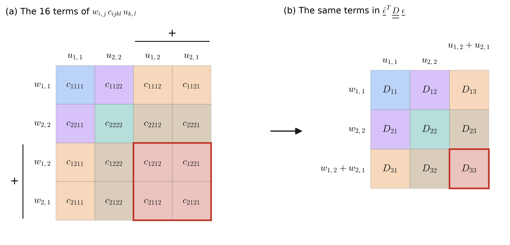
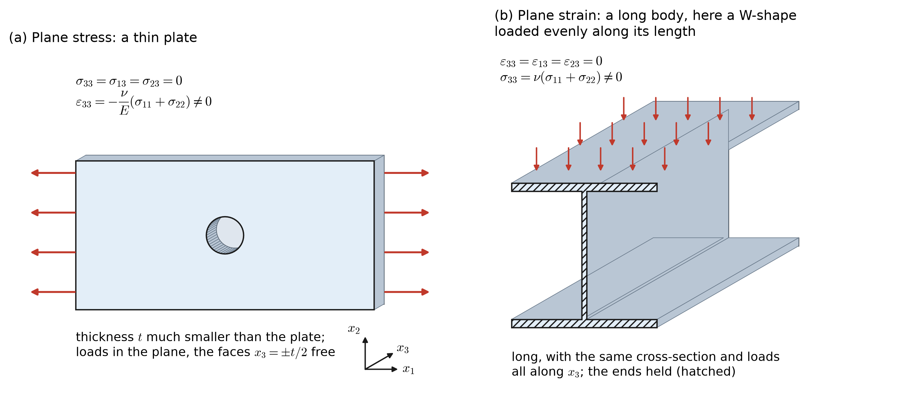

27 Class 27: Voigt Notation and the Elasticity Matrix
The weak form of elasticity with vectors and matrices, and the plane strain and plane stress assumptions
In Class 26, we found the weak form of linear elasticity, which is the principle of virtual work:
\[ \int_\Omega w_{(i,j)}\,\sigma_{ij}\;d\Omega = \int_\Omega w_i\,f_i\;d\Omega + \sum_{i=1}^{n_{sd}}\left(\int_{\Gamma_{h_i}} w_i\,h_i\;d\Gamma\right) . \]
As in Class 26, \(w_i\) is the virtual displacement, which some texts write as \(\hat{u}_i\), \(\delta u_i\), or \(\bar{u}_i\). These notes continue to use \(w_i\). The hat on the virtual strain vector \(\hat{\underline{\epsilon}}\), defined below, is used in the same spirit, to mark the strain of the virtual displacement.
The stress is related to the displacement by Hooke’s law, \(\sigma_{ij} = c_{ijkl}\,\varepsilon_{kl} = c_{ijkl}\,u_{(k,l)}\), so the weak form can be written entirely in terms of the displacement:
\[ \underbrace{\int_\Omega w_{(i,j)}\,c_{ijkl}\,u_{(k,l)}\;d\Omega}_{a(\underline{w},\,\underline{u})} = \underbrace{\int_\Omega w_i\,f_i\;d\Omega}_{(\underline{w},\,\underline{f})} + \underbrace{\sum_{i=1}^{n_{sd}}\left(\int_{\Gamma_{h_i}} w_i\,h_i\;d\Gamma\right)}_{(\underline{w},\,\underline{h})_\Gamma} . \]
This has the same structure as the weak form of the Poisson Equation, \(a(w,u) = (w,f) + (w,h)_\Gamma\). The integrand of \(a(\underline{w},\underline{u})\), however, is summed over four indices. In two dimensions it contains \(2^4 = 16\) terms, and in three dimensions it contains \(3^4 = 81\). Before we can compute it with the finite element method, we need a more compact way to write it.
Since the strain and the stress are symmetric, each has only three independent components in two dimensions, and six in three dimensions. Voigt notation stores these independent components in vectors, and stores the elastic coefficients in a matrix. The weak form then becomes a product of vectors and matrices, which is the form that is typically used.
27.1 The strain vector and the elasticity matrix
We first assume two dimensions. Define the strain vector of the displacement, and the corresponding virtual strain vector of the virtual displacement, by
\[ \underline{\epsilon}(\underline{u}) = \begin{bmatrix} u_{1,1} \\ u_{2,2} \\ u_{1,2} + u_{2,1} \end{bmatrix} =: \underline{\epsilon}, \qquad \underline{\epsilon}(\underline{w}) = \begin{bmatrix} w_{1,1} \\ w_{2,2} \\ w_{1,2} + w_{2,1} \end{bmatrix} =: \hat{\underline{\epsilon}} . \]
The first two entries are the normal strains \(\varepsilon_{11}\) and \(\varepsilon_{22}\). The third entry is \(u_{1,2} + u_{2,1} = 2\,\varepsilon_{12}\), which is called the engineering shear strain, \(\gamma_{12}\). It is the total change in the angle between two fibers that were originally along the \(x_1\) and \(x_2\) directions. The reason that the third entry is the sum rather than the average will become clear below. This vector holds only the in-plane strains. The strains that involve the third direction, \(\varepsilon_{13}\), \(\varepsilon_{23}\), and \(\varepsilon_{33}\), are treated in the sections on plane strain and plane stress.
Define the elasticity matrix by
\[ \underline{\underline{D}} = \begin{bmatrix} D_{11} & D_{12} & D_{13} \\ D_{21} & D_{22} & D_{23} \\ D_{31} & D_{32} & D_{33} \end{bmatrix}, \qquad D_{IJ} = D_{JI} . \]
Its entries are elastic coefficients, \(D_{IJ} = c_{ijkl}\), where each capital index stands for a pair of lowercase indices according to Table 27.1.
| \(I\) (or \(J\)) | \(i\) (or \(k\)) | \(j\) (or \(l\)) |
|---|---|---|
| 1 | 1 | 1 |
| 2 | 2 | 2 |
| 3 | 1 | 2 |
| 3 | 2 | 1 |
For example, \(D_{12} = c_{1122}\) and \(D_{13} = c_{1112}\). Since both \(12\) and \(21\) map to \(3\), the entry \(D_{13}\) could equally be written \(c_{1121}\), and the minor symmetries guarantee that these are the same number. The major symmetry, \(c_{ijkl} = c_{klij}\), gives \(D_{IJ} = D_{JI}\).
27.2 The weak form in Voigt notation
Converting the symmetric tensor notation from four indices to two indices is called representing the tensor in Voigt notation (named after the German physicist Woldemar Voigt).
We will now show that the integrand of \(a(\underline{w},\underline{u})\) is equal to \(\hat{\underline{\epsilon}}^T\,\underline{\underline{D}}\;\underline{\epsilon}\).
Start with the tensor form. Since \(c_{ijkl} = c_{jikl}\), the quantity \(c_{ijkl}\,u_{(k,l)}\) is symmetric in \(i\) and \(j\), so the result of Class 26 allows \(w_{(i,j)}\) to be replaced by \(w_{i,j}\), and the same argument applies to \(u_{(k,l)}\). Writing out the sums over \(i\), \(j\), \(k\), and \(l\) then gives the 16 terms
\[ \begin{aligned} w_{(i,j)}\,c_{ijkl}\,u_{(k,l)} = \;& w_{1,1}\left(c_{1111}\,u_{1,1} + c_{1122}\,u_{2,2} + c_{1112}\,u_{1,2} + c_{1121}\,u_{2,1}\right) \\ + \;& w_{2,2}\left(c_{2211}\,u_{1,1} + c_{2222}\,u_{2,2} + c_{2212}\,u_{1,2} + c_{2221}\,u_{2,1}\right) \\ + \;& w_{1,2}\left(c_{1211}\,u_{1,1} + c_{1222}\,u_{2,2} + c_{1212}\,u_{1,2} + c_{1221}\,u_{2,1}\right) \\ + \;& w_{2,1}\left(c_{2111}\,u_{1,1} + c_{2122}\,u_{2,2} + c_{2112}\,u_{1,2} + c_{2121}\,u_{2,1}\right) . \end{aligned} \]
Next, multiply out the Voigt form:
\[ \begin{aligned} \hat{\underline{\epsilon}}^T\,\underline{\underline{D}}\;\underline{\epsilon} &= \begin{bmatrix} w_{1,1} & w_{2,2} & w_{1,2} + w_{2,1} \end{bmatrix} \begin{bmatrix} D_{11} & D_{12} & D_{13} \\ & D_{22} & D_{23} \\ \text{sym.} & & D_{33} \end{bmatrix} \begin{bmatrix} u_{1,1} \\ u_{2,2} \\ u_{1,2} + u_{2,1} \end{bmatrix} \\[4pt] &= \;w_{1,1}\left(D_{11}\,u_{1,1} + D_{12}\,u_{2,2} + D_{13}\left(u_{1,2} + u_{2,1}\right)\right) \\ &\quad + w_{2,2}\left(D_{12}\,u_{1,1} + D_{22}\,u_{2,2} + D_{23}\left(u_{1,2} + u_{2,1}\right)\right) \\ &\quad + \left(w_{1,2} + w_{2,1}\right)\left(D_{13}\,u_{1,1} + D_{23}\,u_{2,2} + D_{33}\left(u_{1,2} + u_{2,1}\right)\right) . \end{aligned} \]
Replacing each \(D_{IJ}\) with the corresponding \(c_{ijkl}\) from Table 27.1, and using the major and minor symmetries to choose the order of the indices in each term, turns these three lines into exactly the 16 terms above. Therefore
\[ \boxed{\; w_{(i,j)}\,c_{ijkl}\,u_{(k,l)} = \hat{\underline{\epsilon}}^T\,\underline{\underline{D}}\;\underline{\epsilon} \;} \]
Figure 27.1 shows the same bookkeeping as a picture. Each cell on the left is one of the 16 terms of the tensor form, and its color shows which entry of \(\underline{\underline{D}}\) it becomes. The 16 coefficients take only six distinct values, which are the six independent entries of the symmetric matrix \(\underline{\underline{D}}\).

The shear terms show why the strain vector contains the sum \(u_{1,2} + u_{2,1}\). In the tensor form there are four shear terms, one for each combination of \(12\) and \(21\), outlined in Figure 27.1 a:
\[ \begin{aligned} &w_{1,2}\,c_{1212}\,u_{1,2} + w_{1,2}\,c_{1221}\,u_{2,1} + w_{2,1}\,c_{2112}\,u_{1,2} + w_{2,1}\,c_{2121}\,u_{2,1} \\ &\qquad = c_{1212}\left(w_{1,2} + w_{2,1}\right)\left(u_{1,2} + u_{2,1}\right) . \end{aligned} \]
The Voigt form has a single shear entry in each vector, so the single product \(\left(w_{1,2} + w_{2,1}\right) D_{33}\left(u_{1,2} + u_{2,1}\right)\) must account for all four terms. This works with \(D_{33} = c_{1212}\) only if each vector holds the full sum, \(\gamma_{12} = 2\,\varepsilon_{12}\), rather than the tensor component \(\varepsilon_{12}\).
The same matrix also gives the stress. The product \(c_{ijkl}\,u_{(k,l)}\) is the stress \(\sigma_{ij}\), and in Voigt notation it is
\[ \underline{\sigma} = \underline{\underline{D}}\;\underline{\epsilon}, \qquad\text{or}\qquad \sigma_I = D_{IJ}\,\epsilon_J , \qquad\text{where}\qquad \underline{\sigma} = \begin{bmatrix} \sigma_1 \\ \sigma_2 \\ \sigma_3 \end{bmatrix} = \begin{bmatrix} \sigma_{11} \\ \sigma_{22} \\ \sigma_{12} \end{bmatrix} . \]
Note that the stress vector holds the shear stress \(\sigma_{12}\) itself, without a factor of 2. The factor of 2 appears only in the strain vector.
With these definitions, the weak form of Class 26 becomes
\[ \int_\Omega \underline{\epsilon}(\underline{w})^T\,\underline{\underline{D}}\;\underline{\epsilon}(\underline{u})\;d\Omega = \int_\Omega w_i\,f_i\;d\Omega + \sum_{i=1}^{n_{sd}}\left(\int_{\Gamma_{h_i}} w_i\,h_i\;d\Gamma\right) . \]
The same steps apply in three spatial dimensions, with six entries in each vector and a \(6\times 6\) elasticity matrix.
27.3 Isotropic materials
For a homogeneous, isotropic material, Class 26 gave
\[ c_{ijkl}(\underline{x}) = \mu(\underline{x})\left(\delta_{ik}\,\delta_{jl} + \delta_{il}\,\delta_{jk}\right) + \lambda(\underline{x})\,\delta_{ij}\,\delta_{kl} . \]
The entries of \(\underline{\underline{D}}\) then follow from Table 27.1, using \(\delta_{11} = \delta_{22} = 1\) and \(\delta_{12} = \delta_{21} = 0\):
\[ \begin{aligned} D_{11} &= c_{1111} = \mu\left(\delta_{11}\delta_{11} + \delta_{11}\delta_{11}\right) + \lambda\,\delta_{11}\delta_{11} = \lambda + 2\mu \\ D_{12} &= c_{1122} = \mu\left(\delta_{12}\delta_{12} + \delta_{12}\delta_{12}\right) + \lambda\,\delta_{11}\delta_{22} = \lambda \\ D_{13} &= c_{1112} = \mu\left(\delta_{11}\delta_{12} + \delta_{12}\delta_{11}\right) + \lambda\,\delta_{11}\delta_{12} = 0 \\ D_{22} &= c_{2222} = \mu\left(\delta_{22}\delta_{22} + \delta_{22}\delta_{22}\right) + \lambda\,\delta_{22}\delta_{22} = \lambda + 2\mu \\ D_{23} &= c_{2212} = \mu\left(\delta_{21}\delta_{22} + \delta_{22}\delta_{21}\right) + \lambda\,\delta_{22}\delta_{12} = 0 \\ D_{33} &= c_{1212} = \mu\left(\delta_{11}\delta_{22} + \delta_{12}\delta_{21}\right) + \lambda\,\delta_{12}\delta_{12} = \mu \end{aligned} \]
The zeros in \(D_{13}\) and \(D_{23}\) state that, in an isotropic material, a normal strain produces no shear stress, and a shear strain produces no normal stress.
In three dimensions, the vectors hold six entries, ordered \(11\), \(22\), \(33\), \(23\), \(13\), \(12\), and a homogeneous, isotropic material has
\[ \underbrace{\begin{bmatrix} \sigma_{11} \\ \sigma_{22} \\ \sigma_{33} \\ \sigma_{23} \\ \sigma_{13} \\ \sigma_{12} \end{bmatrix}}_{\underline{\sigma}} = \underbrace{\begin{bmatrix} \lambda + 2\mu & \lambda & \lambda & 0 & 0 & 0 \\ \lambda & \lambda + 2\mu & \lambda & 0 & 0 & 0 \\ \lambda & \lambda & \lambda + 2\mu & 0 & 0 & 0 \\ 0 & 0 & 0 & \mu & 0 & 0 \\ 0 & 0 & 0 & 0 & \mu & 0 \\ 0 & 0 & 0 & 0 & 0 & \mu \end{bmatrix}}_{\underline{\underline{D}}} \underbrace{\begin{bmatrix} u_{1,1} \\ u_{2,2} \\ u_{3,3} \\ u_{2,3} + u_{3,2} \\ u_{1,3} + u_{3,1} \\ u_{1,2} + u_{2,1} \end{bmatrix}}_{\underline{\epsilon}} . \]
Written out row by row, this is
\[ \begin{aligned} \sigma_{11} &= 2\mu\,\varepsilon_{11} + \lambda\left(\varepsilon_{11} + \varepsilon_{22} + \varepsilon_{33}\right), & \sigma_{23} &= \mu\left(u_{2,3} + u_{3,2}\right) = 2\mu\,\varepsilon_{23}, \\ \sigma_{22} &= 2\mu\,\varepsilon_{22} + \lambda\left(\varepsilon_{11} + \varepsilon_{22} + \varepsilon_{33}\right), & \sigma_{13} &= \mu\left(u_{1,3} + u_{3,1}\right) = 2\mu\,\varepsilon_{13}, \\ \sigma_{33} &= 2\mu\,\varepsilon_{33} + \lambda\left(\varepsilon_{11} + \varepsilon_{22} + \varepsilon_{33}\right), & \sigma_{12} &= \mu\left(u_{1,2} + u_{2,1}\right) = 2\mu\,\varepsilon_{12}, \end{aligned} \]
which agrees with the compact form \(\sigma_{ij} = 2\mu\,\varepsilon_{ij} + \lambda\,\varepsilon_{kk}\,\delta_{ij}\) of Class 26.
27.4 Material properties
The positive definiteness of the elastic coefficients, from Class 26, limits the values that the material properties can take. For an isotropic material, it requires \(E > 0\) and \(-1 < \nu < \tfrac{1}{2}\), and most metals have \(\nu\) between about 0.25 and 0.35. As \(\nu\) approaches \(\tfrac{1}{2}\), the material becomes nearly incompressible, as rubber is, and \(\lambda\), and with it \(\underline{\underline{D}}\), grows without bound. Standard displacement-based methods to solve the equations of elasticity become too stiff for incompressible and nearly incompressible materials, which is called locking. Hughes Chapter 4 describes some ways to address locking.
Not every material is isotropic. Wood, rolled metal sheet, and fiber-reinforced composites are stiffer in some directions than in others, and \(\underline{\underline{D}}\) then has more independent entries: nine in three dimensions for an orthotropic material, which has three perpendicular planes of symmetry, and 21 for the most general material.
Wood is commonly idealized as orthotropic. Its three material directions are longitudinal (\(L\), along the grain), radial (\(R\), across the growth rings), and tangential (\(T\), tangent to the growth rings), and it is often ten or more times stiffer along the grain than across it. Each direction has its own Young’s modulus, \(E_L\), \(E_R\), and \(E_T\), and each plane has its own shear modulus, \(G_{RT}\), \(G_{LT}\), and \(G_{LR}\). The Poisson’s ratio \(\nu_{LR}\) is the ratio of the contraction in the \(R\) direction to the extension in the \(L\) direction under a stress in the \(L\) direction, and the other ratios are defined in the same way. With \(x_1\), \(x_2\), and \(x_3\) aligned with \(L\), \(R\), and \(T\), the law is simplest to write with the inverse of \(\underline{\underline{D}}\), which gives the strain produced by each stress:
\[ \underline{\epsilon} = \underbrace{\begin{bmatrix} 1/E_L & -\nu_{RL}/E_R & -\nu_{TL}/E_T & 0 & 0 & 0 \\ -\nu_{LR}/E_L & 1/E_R & -\nu_{TR}/E_T & 0 & 0 & 0 \\ -\nu_{LT}/E_L & -\nu_{RT}/E_R & 1/E_T & 0 & 0 & 0 \\ 0 & 0 & 0 & 1/G_{RT} & 0 & 0 \\ 0 & 0 & 0 & 0 & 1/G_{LT} & 0 \\ 0 & 0 & 0 & 0 & 0 & 1/G_{LR} \end{bmatrix}}_{\underline{\underline{D}}^{-1}} \underline{\sigma} , \]
with \(\underline{\sigma}\) and \(\underline{\epsilon}\) ordered \(11\), \(22\), \(33\), \(23\), \(13\), \(12\) as above. The symmetry of the matrix requires \(\nu_{LR}/E_L = \nu_{RL}/E_R\), and likewise for the other two pairs, which leaves nine independent constants. Its inverse, \(\underline{\underline{D}}\), has the same pattern of zeros as for an isotropic material: each normal stress depends on all three normal strains, now with unequal coefficients, and each shear stress depends only on its own shear strain.
The radial and tangential directions follow the growth rings, so they turn from point to point around the center of the tree. The matrix above therefore holds in the local \(L\), \(R\), \(T\) axes at each point. In a board cut far from the center, the rings are nearly flat, and one set of axes serves for the whole board, which is the usual idealization of lumber. Otherwise, \(\underline{\underline{D}}\) must be rotated into the \(x_1\), \(x_2\), \(x_3\) axes at each point, and it then varies over the body, just as a conductivity can.
In axes that are not aligned with the directions of the material, the zeros of \(\underline{\underline{D}}\) fill in, so a normal strain produces a shear stress. The appendix Linear Elasticity I shows the elasticity matrix of a fiber composite as its fibers are turned.
27.5 From three dimensions to two dimensions
Every body is three-dimensional. A two-dimensional model describes the displacements in a cross-section of the body, and it must make an assumption about what happens in the third direction. Two assumptions are common, and they lead to two different \(3\times 3\) elasticity matrices. Both are obtained from the three-dimensional isotropic law above.

27.5.1 Plane strain
Plane strain describes a long object, such as a dam or the W-shape of Figure 27.2 b, for which one cross-section represents the whole. The displacements in the cross-section do not depend on \(z\), and nothing moves along the length:
\[ u_1(x,y,z) = u_1(x,y), \qquad u_2(x,y,z) = u_2(x,y), \qquad u_3(x,y,z) = 0 . \]
Therefore
\[ 0 = \frac{\partial u_1}{\partial z} = \frac{\partial u_2}{\partial z} = \frac{\partial u_3}{\partial z} = \frac{\partial u_3}{\partial y} = \frac{\partial u_3}{\partial x} \qquad\Longrightarrow\qquad \varepsilon_{xz} = \varepsilon_{yz} = \varepsilon_{zz} = 0 . \]
Setting these strains to zero in the three-dimensional law gives
\[ \begin{aligned} \sigma_{11} &= 2\mu\,\varepsilon_{11} + \lambda\left(\varepsilon_{11} + \varepsilon_{22}\right), & \sigma_{33} &= \lambda\left(\varepsilon_{11} + \varepsilon_{22}\right), \\ \sigma_{22} &= 2\mu\,\varepsilon_{22} + \lambda\left(\varepsilon_{11} + \varepsilon_{22}\right), & \sigma_{23} &= \sigma_{13} = 0, \\ \sigma_{12} &= 2\mu\,\varepsilon_{12} , \end{aligned} \]
so that
\[ \begin{bmatrix} \sigma_{11} \\ \sigma_{22} \\ \sigma_{12} \end{bmatrix} = \begin{bmatrix} \lambda + 2\mu & \lambda & 0 \\ \lambda & \lambda + 2\mu & 0 \\ 0 & 0 & \mu \end{bmatrix} \begin{bmatrix} u_{1,1} \\ u_{2,2} \\ u_{1,2} + u_{2,1} \end{bmatrix} . \]
This is the two-dimensional matrix found above for an isotropic material. Note that \(\sigma_{33}\) is not zero: a stress along the length is needed to keep the body from stretching or shortening in that direction. It is not an unknown of the problem, and it is computed afterward from the in-plane strains.
27.5.2 Plane stress
Plane stress describes a very slim object, such as the plate of Figure 27.2 a, whose faces carry no load. Since the faces are free and the plate is thin, the stresses that act on planes parallel to the faces are taken to be zero throughout:
\[ u_1(x,y,z) = u_1(x,y), \qquad u_2(x,y,z) = u_2(x,y), \qquad \sigma_{33} = \sigma_{13} = \sigma_{23} = 0 . \]
Using the three-dimensional isotropic law,
\[ \begin{aligned} \sigma_{23} &= 0 = 2\mu\,\varepsilon_{23} &&\Longrightarrow\quad \varepsilon_{23} = 0, \\ \sigma_{13} &= 0 = 2\mu\,\varepsilon_{13} &&\Longrightarrow\quad \varepsilon_{13} = 0, \\ \sigma_{33} &= 0 = 2\mu\,\varepsilon_{33} + \lambda\left(\varepsilon_{11} + \varepsilon_{22} + \varepsilon_{33}\right) &&\Longrightarrow\quad \varepsilon_{33} = -\frac{\lambda\left(\varepsilon_{11} + \varepsilon_{22}\right)}{\lambda + 2\mu} . \end{aligned} \]
Unlike plane strain, \(\varepsilon_{33}\) is not zero: the plate becomes thinner where it is stretched. Substituting \(\varepsilon_{33}\) into the law for \(\sigma_{11}\) gives
\[ \begin{aligned} \sigma_{11} &= 2\mu\,\varepsilon_{11} + \lambda\left(\varepsilon_{11} + \varepsilon_{22} - \frac{\lambda\left(\varepsilon_{11} + \varepsilon_{22}\right)}{\lambda + 2\mu}\right) \\ &= 2\mu\,\varepsilon_{11} + \frac{2\lambda\mu}{\lambda + 2\mu}\left(\varepsilon_{11} + \varepsilon_{22}\right) =: 2\mu\,\varepsilon_{11} + \bar{\lambda}\left(\varepsilon_{11} + \varepsilon_{22}\right) , \end{aligned} \]
where \(\bar{\lambda} = 2\lambda\mu/(\lambda + 2\mu)\). In the same way, \(\sigma_{22} = 2\mu\,\varepsilon_{22} + \bar{\lambda}\left(\varepsilon_{11} + \varepsilon_{22}\right)\), and \(\sigma_{12} = 2\mu\,\varepsilon_{12}\) as before, so that
\[ \begin{bmatrix} \sigma_{11} \\ \sigma_{22} \\ \sigma_{12} \end{bmatrix} = \begin{bmatrix} \bar{\lambda} + 2\mu & \bar{\lambda} & 0 \\ \bar{\lambda} & \bar{\lambda} + 2\mu & 0 \\ 0 & 0 & \mu \end{bmatrix} \begin{bmatrix} u_{1,1} \\ u_{2,2} \\ u_{1,2} + u_{2,1} \end{bmatrix} . \]
The plane stress matrix has the same form as the plane strain matrix, with \(\lambda\) replaced by \(\bar{\lambda}\). In terms of Young’s modulus and Poisson’s ratio, \(\bar{\lambda} + 2\mu = E/(1-\nu^2)\) and \(\bar{\lambda} = \nu E/(1-\nu^2)\).
For steel, with \(E\) = 200 GPa and \(\nu\) = 0.3, \(\lambda\) = 115.4 GPa, \(\bar{\lambda}\) = 65.9 GPa, and \(\mu\) = 76.9 GPa. The first diagonal entry is then \(D_{11}\) = 269.2 GPa in plane strain, and 219.8 GPa in plane stress. Plane strain is the stiffer of the two, because the material cannot expand or contract along the length of the body.
27.6 Summary
- In Voigt notation, the strain and the virtual strain are stored as vectors, \(\underline{\epsilon} = \left(u_{1,1},\, u_{2,2},\, u_{1,2} + u_{2,1}\right)\) in two dimensions, and the elastic coefficients are stored in a symmetric matrix \(\underline{\underline{D}}\), with \(D_{IJ} = c_{ijkl}\) through the index map of Table 27.1.
- The integrand of the weak form becomes \(w_{(i,j)}\,c_{ijkl}\,u_{(k,l)} = \hat{\underline{\epsilon}}^T\,\underline{\underline{D}}\;\underline{\epsilon}\), and the stress becomes \(\underline{\sigma} = \underline{\underline{D}}\;\underline{\epsilon}\).
- The shear entry of the strain vector is the engineering shear strain \(\gamma_{12} = u_{1,2} + u_{2,1} = 2\,\varepsilon_{12}\), so that one product in the Voigt form accounts for all four shear terms of the tensor form; the stress vector holds \(\sigma_{12}\) without a factor of 2.
- For an isotropic material, the diagonal entries are \(\lambda + 2\mu\) for the normal strains and \(\mu\) for the shear strains, and normal and shear components are not coupled.
- Positive definiteness requires \(E > 0\) and \(-1 < \nu < \tfrac{1}{2}\); anisotropic materials have more independent entries in \(\underline{\underline{D}}\), and can couple normal and shear components. An orthotropic material such as wood has nine, and in its material axes \(\underline{\underline{D}}\) has the same pattern of zeros as for an isotropic material.
- Plane strain assumes that nothing varies or moves along the length of a long body, so \(\varepsilon_{33} = 0\) and \(\sigma_{33} = \lambda\left(\varepsilon_{11} + \varepsilon_{22}\right)\).
- Plane stress assumes that a thin body carries no stress on planes parallel to its faces, so \(\sigma_{33} = 0\), the plate thins, and the elasticity matrix uses \(\bar{\lambda} = 2\lambda\mu/(\lambda + 2\mu)\) in place of \(\lambda\).
- The appendix Linear Elasticity I has an interactive view of the elasticity matrix and of the forces on a small block, and Linear Elasticity II uses \(\underline{\underline{D}}\) to build the element stiffness matrix.